SUMMARY
One of our greatest barriers to making progress when it comes to being more inclusive is that we have atendency to design and engineer things for ourselves. This project is an attempt to tackle that by raisingawareness about disability through an interactive visualization of US census data.
Our visualization takes Schneiderman’s approach to design:
Overview First
Zoom and Filter
Details on Demand
We went for a unit visualization approach with each unit being a hexagon representing 50,000 people.
Lighter ones
represent those without
Darker ones represent
people with disability
50,000
50,000
http://swargujrania.com/usdisabilityawareness/
TILED CARTOGRAM
We start off by providing an overview of prevalence of disability throughout the US through a Tiled Cartogram, in which the states
are re-sized according to their population. On the side, we can also see trends in prevalence over the years, in both actual
numbers and percentages using line charts. When no state is selected, users see trends for the whole country. On selection, the
view updates for those specific states.
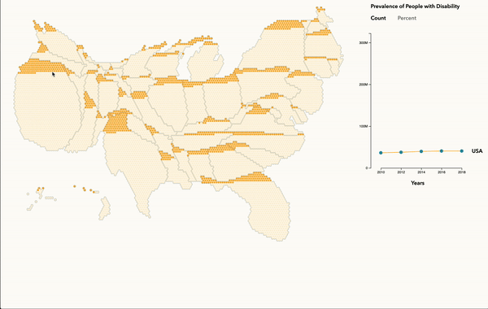
CROSSTAB VIEW
Next, we tried to understand the prevalence of different types of disabilities across age groups. We can see that ambulatory
disabilities increase dramatically in the older population. Also, cognitive disabilities are the most common amongst children.
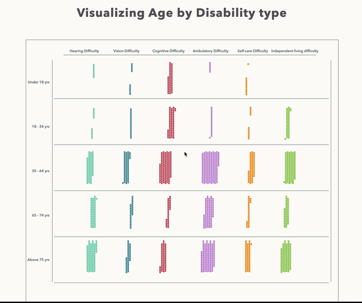
At first glance, it does not look like there is a huge difference between the younger and older age groups. However, with thepopulation without disability in the view, it becomes evident that the older age groups have a much higher proportion ofdisabled people.
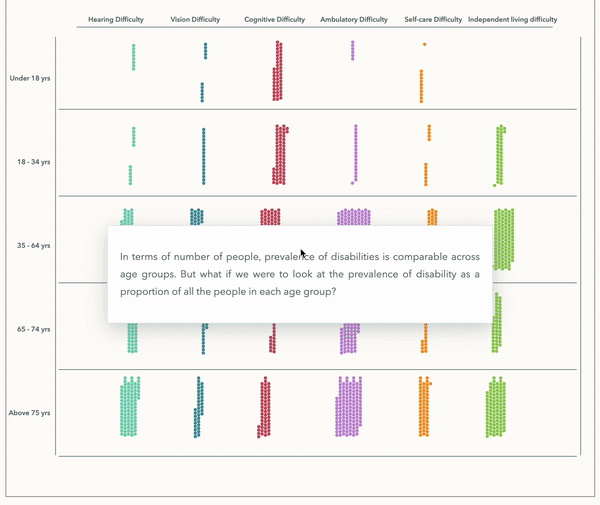
Additionally, one can click on a group and align a disability type, in order to make more accurate comparisons using a dancing bar
view.
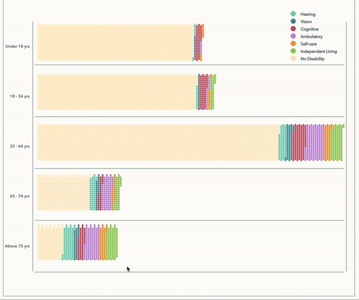
BUCKET VIEW
Earnings
Our understanding of this landscape would be incomplete without exploring economic characteristics. We look at the earnings of
people with disability in the US. At first, it seems that the number of people with disability in each income bracket is fairly
similar.
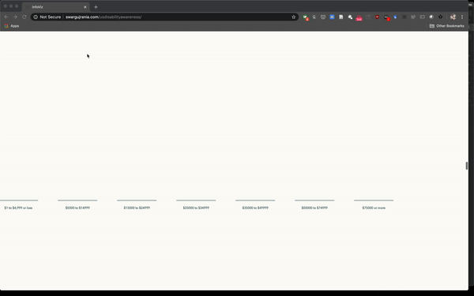
But as we bring everyone into the picture, we see that in the highest income bracket, people with a disability are less than 5%.
We can also make state wise comparisons by selecting a state from the dropdown, or clicking a unit.
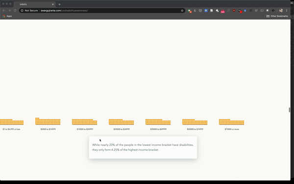
We can also make state wise comparisons by selecting a state from the dropdown, or clicking a unit.
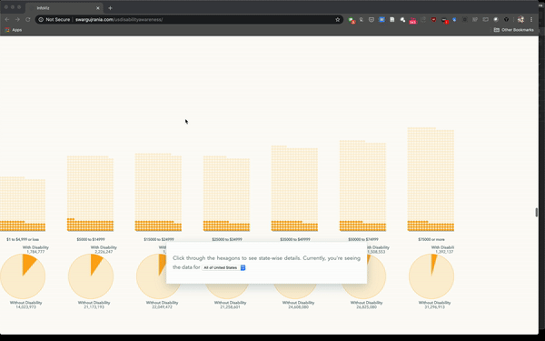
Poverty Levels
This trend pervades poverty levels too. The numbers for over 150% of the poverty line is so high that it doesn’t even fit the
screen.
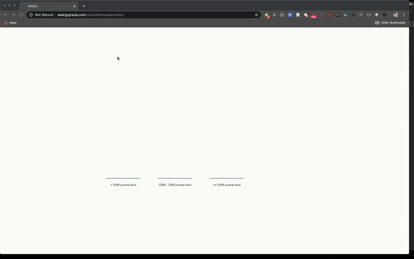
Education
But why this disparity? To understand this, we looked at people’s education levels
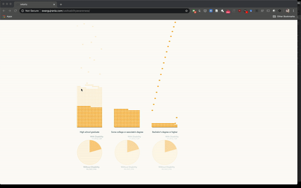
We see that people with disability form about 25% of the people who have graduated high school, 20% of those who’ve
attended some college, and less than 10% of the people with a bachelor’s degree or higher.
RADIAL BAR CHART
Industry
To understand how does this translate to distribution across industries, we use a radial bar chart.
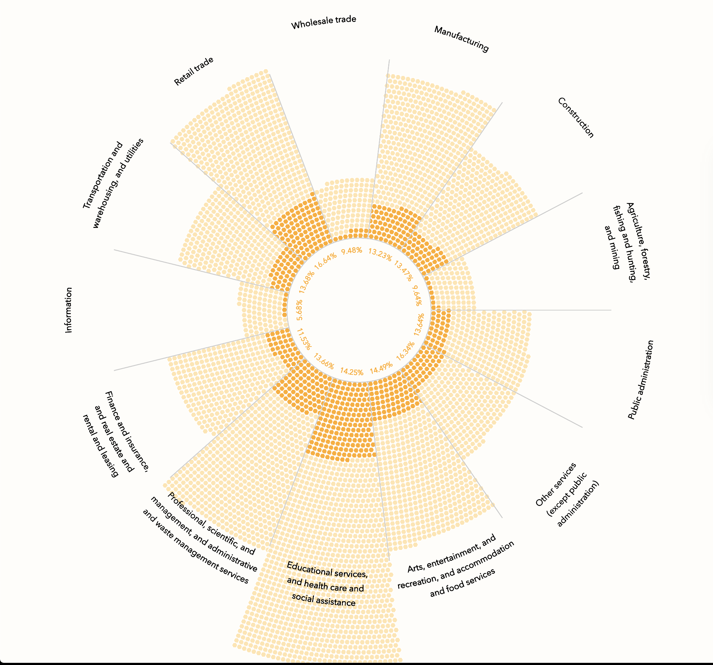
In almost all, people with disabilities form 11-16% of the workforce. For agriculture, forestry, fishing and mining industry, theyform an even smaller portion. This is understandable because of the physically intensive nature of the work involved. However, it’sinteresting to see that the Information sector has the lowest number of people with disability - only 5%.
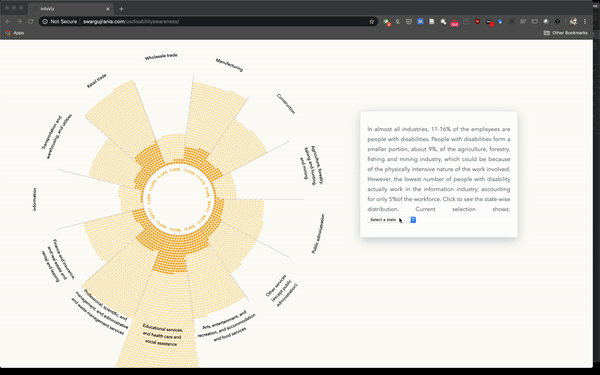
Class of Worker
Interestingly, people with disabilities have the lowest representation in the government sector, with only around 2% in state
and federal governments while the highest representation is in the private sector - still just 5%.
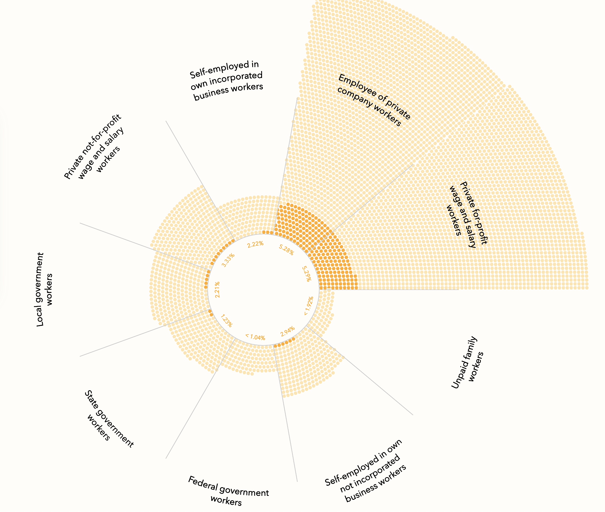
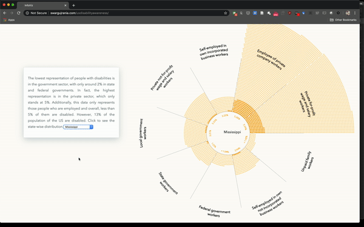
It’s important to understand that we need to think inclusively whenever we build something because the world is full of peoplewith different needs and somebody who doesn’t have a special need today may not be the same in future. Maybe we can movebeyond the point of thinking of differently-abled as less than something.
Because after all, we are all very differently Abled_D.